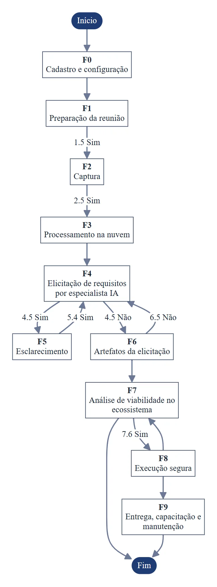
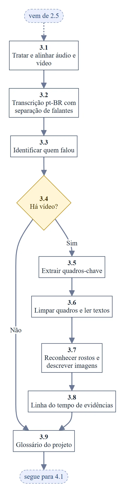
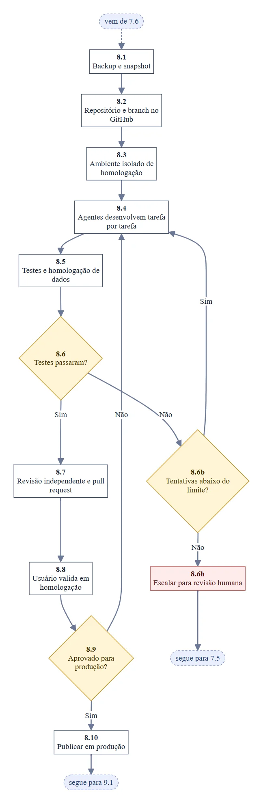

PortfólioAplicativos, jogos e automação
Elicitador de requisitos
Especificação de um produto que grava reuniões, levanta requisitos com IA e executa a demanda com segurança. O processo está escrito em YAML, para pessoas e para IA. Um script confere a consistência e gera os diagramas de cada fase.
- Tipo
- Método e especificação de produto
- Formato
- YAML, JSON e Mermaid
- Conferência
- Script em Python
- Versão
- 1.0, outubro de 2026
Diagramas gerados
Diagramas Mermaid gerados pelo gerar.py a partir do processo.yaml.






As 10 fases
F4 e F5 se repetem até não sobrar pendência. F6 volta a F4 se a revisão não aprovar.
Passos por fase
71 passos: 51 ações, 12 decisões, 6 exceções, início e fim
Formato do passo
Tipos: ação, decisão, exceção, início e fim. Atores: usuário, participante, app, nuvem, agente de IA, agente conector e revisor humano.
- id: "1.2"
tipo: decisao
titulo: Óculos conectado?
descricao: O app verifica se os óculos estão pareados e com bateria.
ator: app
ramos: {"Sim": "1.2a", "Não": "1.2b"}
- id: "1.2a"
tipo: acao
titulo: Modo áudio e vídeo
descricao: Áudio principal do microfone de lapela (melhor qualidade)
e vídeo dos óculos. O áudio dos óculos fica como reserva.
ator: app
proximo: "1.3"Cada passo tem tipo, ator, entradas, saídas, critério de conclusão e o passo seguinte.
Conferência automática
Resultado atual: 71 passos, 12 decisões, todos alcançáveis e todos chegam ao fim.
- Identificador repetidoInterrompe com [PAREI].
- Decisão incompletaToda decisão precisa de 2 ramos ou mais.
- Destino inexistenteTodo próximo passo precisa existir.
- AtorToda ação, decisão e exceção precisa de ator.
- AlcanceTodo passo é alcançável a partir do início e chega ao fim.
Controles permanentes
- C1 CriptografiaTLS 1.2 ou superior e dado cifrado em repouso.
- C2 Perfis e auditoriaDono, gestor, analista e convidado; log imutável.
- C3 LGPDBiometria com consentimento específico e relatório de impacto.
- C4 Orçamento de IATeto por projeto e escolha do modelo mais barato que atende.
- C5 CronogramaMarcos, percentual concluído e alerta de atraso.